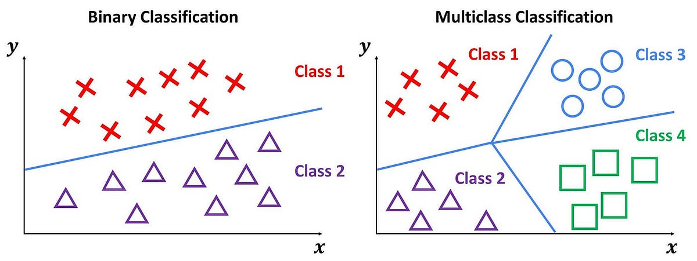
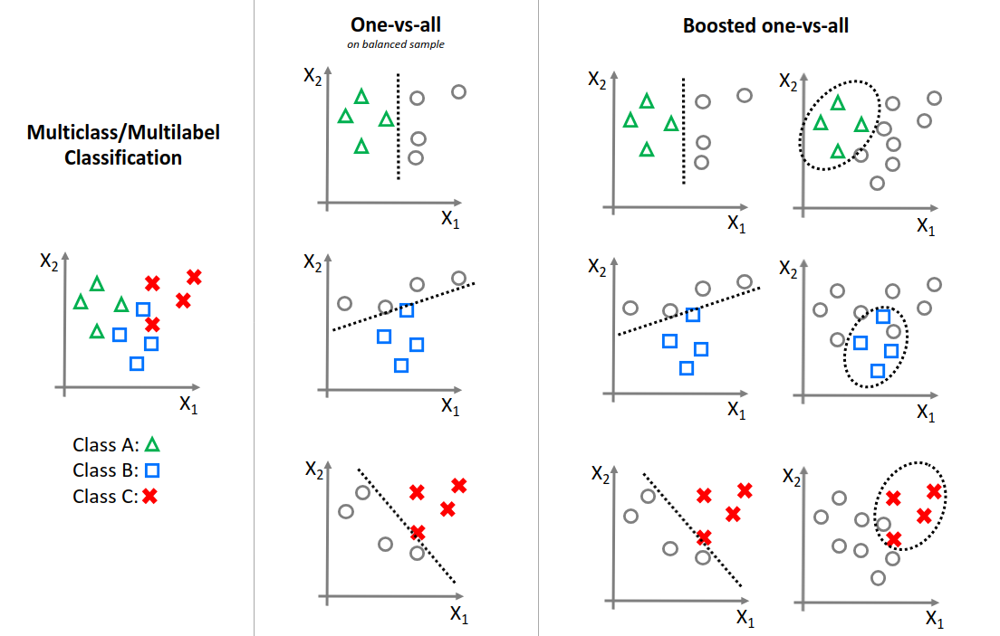
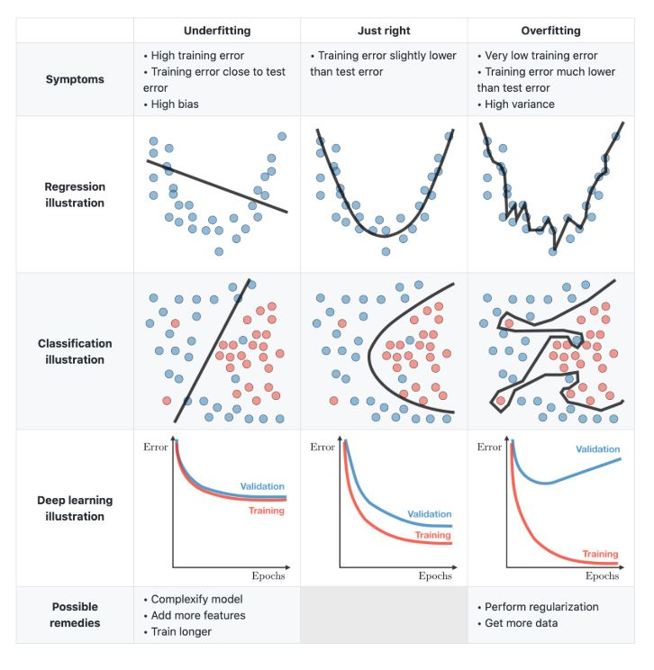
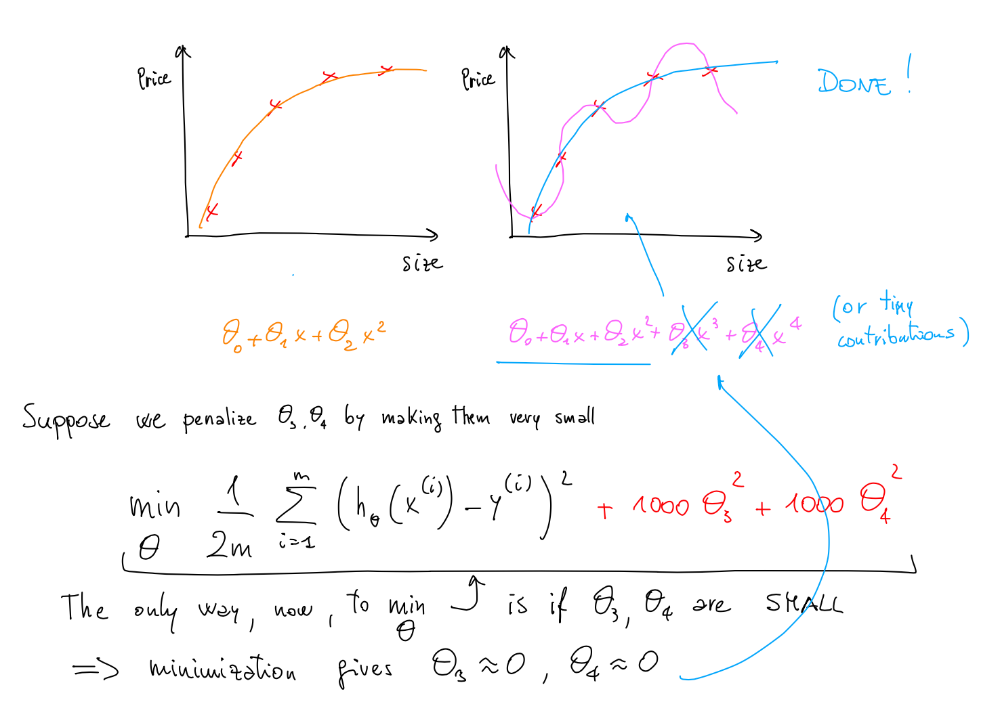
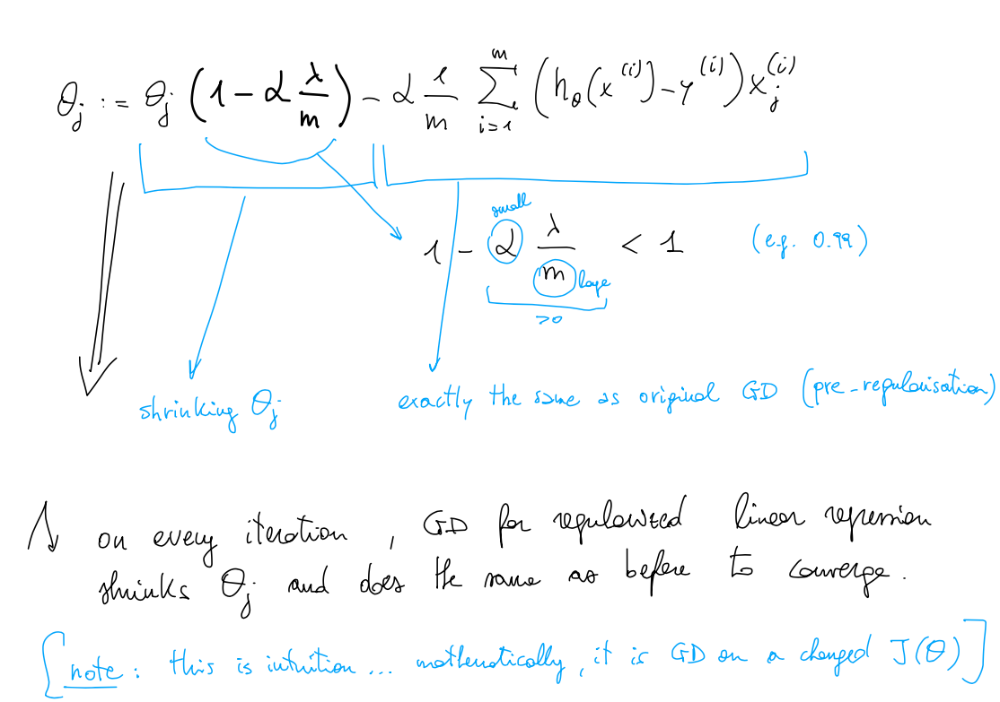
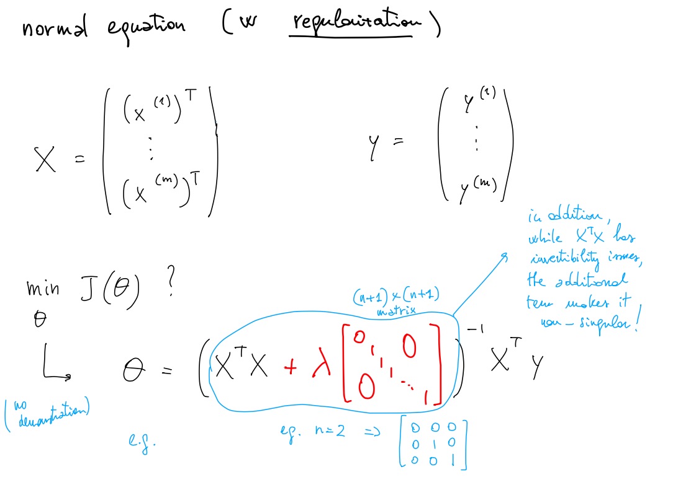
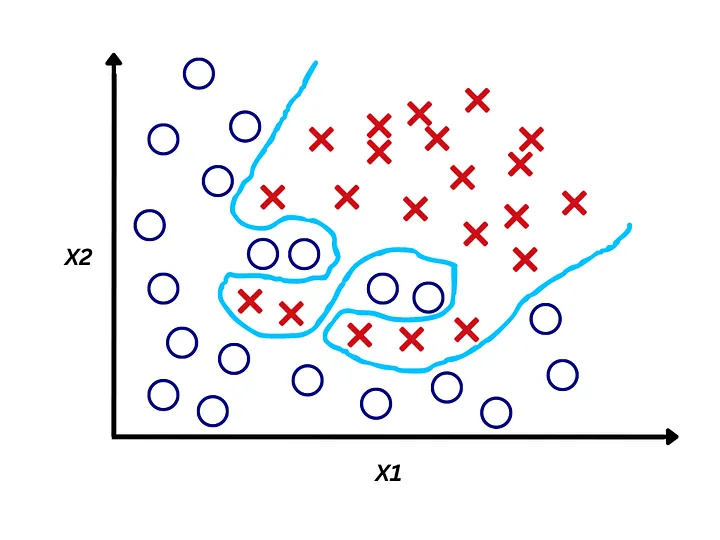
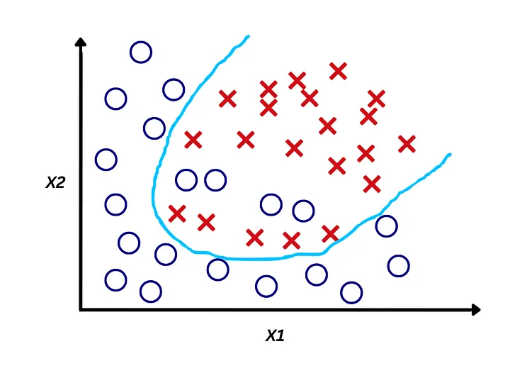

Big Picture
Lecture 02B introduced binary logistic regression. This lecture begins by extending that idea to multiclass classification, then shifts to a deeper question: how do we prevent a model from learning the training set too well and failing on new data?
The lecture therefore moves from prediction mechanics to model quality. That transition is important: building a model is only the first step. The harder question is whether the model learned something reusable.
From Binary to Multiclass Classification
Binary classification predicts one of two classes. Many real tasks, however, require choosing among several possible categories.
| Task | Example Classes |
|---|---|
| Email tagging | Home, Work, Family, Hobby |
| Medical diagnosis | Not ill, Cold, Flu, Pneumonia |
| Weather labeling | Sunny, Rainy, Snowy, Windy |
In this setting, the target is no longer just 0 or 1.
Instead, the label can take one value among several categories such as 1, 2, 3, ....

One-vs-All Strategy
The lecture solves multiclass classification with a simple but powerful trick: turn one multiclass problem into several binary ones.
Instead of trying to directly distinguish between all classes at once, we decompose the problem into multiple simpler ones. Each classifier focuses on recognizing a single class versus all others.
- classifier 1 learns 1 vs not-1
- classifier 2 learns 2 vs not-2
- classifier 3 learns 3 vs not-3

Before
One model must distinguish all classes at once, which can be complex.
After (One-vs-All)
The problem is split into simpler binary tasks, each focusing on a single class.
How the Final Prediction Is Made
After training one classifier for each class, every classifier returns a score that can be interpreted as a probability estimate.
On a new example, we run all classifiers and pick the class with the highest predicted probability.
Run classifier 1 on the input.
Run classifier 2, classifier 3, and all remaining classifiers.
Select the class whose score is largest.
Alternatives to Gradient Descent
Gradient descent is not the only way to minimize a cost function. The lecture briefly introduces a few alternatives that you may encounter in practice.
| Method | Main Idea | Why It Is Mentioned |
|---|---|---|
| Gradient Descent | Follow the gradient direction iteratively | Baseline optimization method used throughout the course |
| Conjugate Gradient | Uses smarter search directions than basic GD | Can converge faster in some settings |
| BFGS | Quasi-Newton optimization for non-linear problems | Common in numerical optimization libraries |
| L-BFGS | Limited-memory version of BFGS | Useful for large problems with many variables |
The lecture does not ask students to master the internal mechanics of these algorithms. The point is to know that optimization can be done in different ways even when the learning objective stays the same.
GD vs Non-GD Methods
Advantages of non-GD methods
- often no manual choice of learning rate
- can be faster than basic gradient descent
- can scale better to large feature spaces
Trade-offs
- more mathematically and computationally complex
- harder to debug
- should usually be used through reliable libraries
A recurring lecture message is practical: use tools wisely. Most applied ML work can go very far with gradient descent and its common variants, especially in a Python ecosystem.
What Is Overfitting?
A model overfits when it matches the training data too closely and loses the ability to make good predictions on new examples.
This makes overfitting especially important: a very low training error can still correspond to a bad machine learning model.
The lecture emphasizes a key distinction: machine learning is not only about minimizing a cost function; it is also about building a hypothesis that generalizes beyond the examples already seen.
Underfitting, Just Right, and Overfitting
The lecture uses intuitive visual examples to compare three typical situations.

Think of it as: too simple → just right → too complex.
The hypothesis is too simple, so it cannot capture the structure of the data.
The hypothesis captures the main pattern without memorizing accidental details.
The hypothesis is too complex and bends itself to the training set, including noise.
Underfitting
You are imposing too much structure on the data. The model has a strong preconception about what the relationship should look like.
Overfitting
You are allowing the model too much freedom, so it starts to memorize details that do not represent the true underlying pattern.
Optimization vs Generalization
The real goal of machine learning is not just to fit the training set, but to perform well on examples that were not part of training.
A highly flexible model may drive the cost function near zero on the training set, but still fail badly on unseen data.
This is why optimization and generalization must be thought of together. Pure optimization can produce a model that looks mathematically impressive and is practically useless.
Why Overfitting Is Hard to Detect
In low-dimensional toy examples, we can visualize the curve or decision boundary. In real machine learning problems, this is often impossible.
Easy case
One feature or two features. You can draw the data and inspect the hypothesis visually.
Realistic case
Many features, possibly thousands. Visual intuition no longer helps directly.
The problem becomes even worse when the dataset is small relative to the number of features. Then the model may learn accidental patterns very easily.
Two Ways to Fight Overfitting
The lecture presents two broad strategies.
Drop some attributes and keep only a subset of the available inputs.
Keep all features, but reduce the influence of less useful ones.
Why removing features is risky
Throwing features away can also throw away useful information. When there are many dimensions, it is often not obvious which features are actually irrelevant.
Why tuning importance is appealing
Instead of deciding manually which features survive, we let training reduce the weight of those that are not useful enough. This idea leads directly to regularization.
Regularization Intuition
Regularization keeps all features, but discourages parameters from becoming too large.
The intuition is simple: when parameters become very large, the hypothesis can become too flexible and too eager to match every detail of the training data.

In that sense, regularization does not ask the model to stop learning. It asks the model to avoid exaggeration.
Regularized Cost Function
The central idea is to change the optimization problem itself. We no longer minimize only the original training error; we add a penalty for large parameter values.
The first term still rewards fitting the data. The second term penalizes large parameters.
| Part | Role |
|---|---|
| Training error term | Fits the examples already in the dataset |
| Regularization term | Penalizes overly large parameter values |
| $$\lambda$$ | Controls how strong the penalty is |
By minimizing both terms together, the model is pushed toward a compromise: fit the data, but do not become unnecessarily complex.
The Role of λ
The parameter $$\lambda$$ is a new hyperparameter. Like the learning rate, it is chosen by us before training.
Parameters are barely constrained, so the model may still overfit.
The model keeps useful flexibility while suppressing unnecessary complexity.
Parameters are forced too close to zero and the model underfits.
Regularized Linear Regression
Once regularization is introduced in the cost function, the learning algorithms for linear regression must be adapted accordingly.
Two approaches already seen for linear regression:
- gradient descent
- the normal equation
Gradient descent view
The update rule changes because the derivative now includes the regularization term. The effect is that parameters are repeatedly updated while also being gently pushed toward smaller values.

Normal equation view
The closed-form solution can be adjusted to include regularization. In practice, this means the matrix expression is modified so that large parameters are penalized in the final solution as well.

Regularized Logistic Regression
The same regularization idea extends naturally from linear regression to logistic regression.
Logistic regression already has a different cost function from linear regression, but the same principle applies: add a penalty term that discourages large parameter values.
This is especially useful in classification when feature mappings create many polynomial or interaction terms. Without regularization, those extra terms can easily produce overly complicated decision boundaries.
Without regularization

The classifier may create a boundary that twists too much around the training points, capturing noise instead of the true pattern.
With regularization

The classifier is encouraged to keep a simpler and smoother decision boundary, making it more robust to new unseen data.
Implementation Notes
Keep implementation at a practical level. The goal is not to hand-code every optimizer and every regularized learner from first principles.
- why one-vs-all works
- why overfitting happens
- why regularization helps
- what λ controls
- use reliable ML libraries
- recognize optimizer names
- know that regularization changes the cost function
- tune hyperparameters with care
Study Material
Use the slide deck for the visual explanation of one-vs-all classification, the comparison between optimization algorithms, and the graphical intuition behind overfitting and regularization.
View PDF →Use the transcript for the lecturer’s intuition on generalization vs optimization, practical insights on when models fail, and the reasoning behind regularization and feature importance.
View PDF →Quick Review Quiz
1. What problem does one-vs-all solve?
It allows a binary classifier like logistic regression to be used for multiclass classification by training one classifier per class against the rest.
2. How many classifiers are trained in one-vs-all with k classes?
We train k binary classifiers, one for each class.
3. How is the final prediction made in one-vs-all classification?
We run all classifiers and choose the class whose classifier outputs the highest probability or score.
4. Why might someone use BFGS or L-BFGS instead of gradient descent?
Because they can converge faster, handle large problems better, and often do not require manually choosing a learning rate.
5. What is overfitting?
Overfitting occurs when a model fits the training data too closely, including noise, and performs poorly on new unseen data.
6. What is the difference between underfitting and overfitting?
Underfitting happens when the model is too simple to capture the data structure, while overfitting happens when the model is too complex and captures noise.
7. What does generalization mean in machine learning?
Generalization is the ability of a model to perform well on new data that was not part of the training set.
8. Why does having many features increase the risk of overfitting?
Because the model becomes more flexible and can more easily fit noise or accidental patterns, especially when the dataset is small.
9. What are the two main strategies to fight overfitting?
Reduce the number of features, or keep all features and reduce their influence using regularization.
10. What happens if the regularization parameter λ is too large?
If λ is too large, parameters are forced too close to zero, leading to an overly simple model and underfitting.